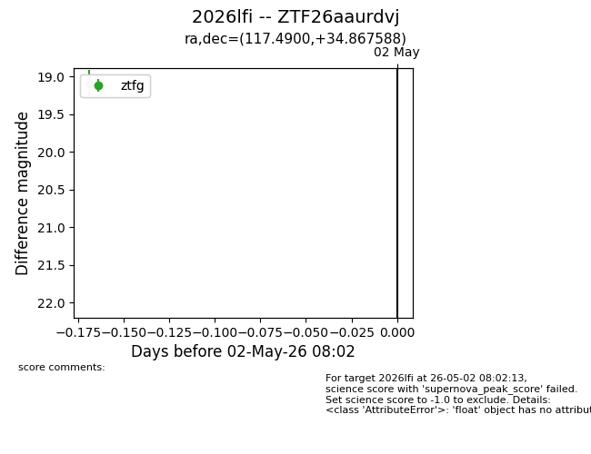
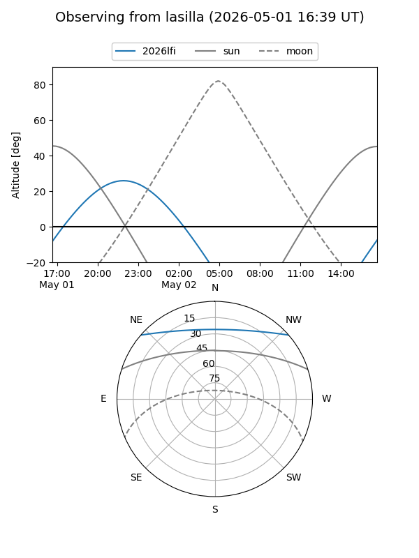
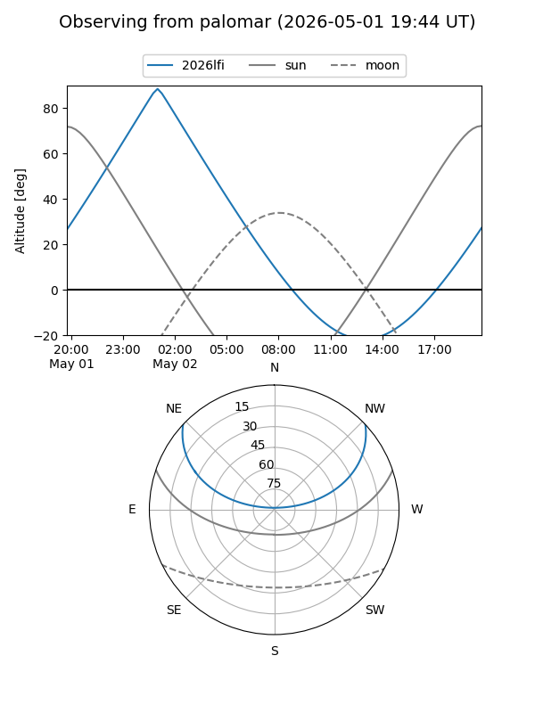

2026lfi
Target 2026lfi at 2026-05-02 08:13
Aliases and brokers:
FINK: link
Lasair: link
ALeRCE: link
TNS: link
YSE: link
alt names
ZTF26aaurdvj (ztf,fink_ztf)
2026lfi (tns,yse)
Coordinates:
equatorial (ra, dec) = 117.4900,+34.86759
equatorial (HMS+DMS) = 07:49:57.60,+34:52:03.32
galactic (l, b) = (185.3735,+26.43093)
Flags:
Photometry:
last ztfg=19.09
1 ztfg detections
Lightcurve

Visibility


Additional plots